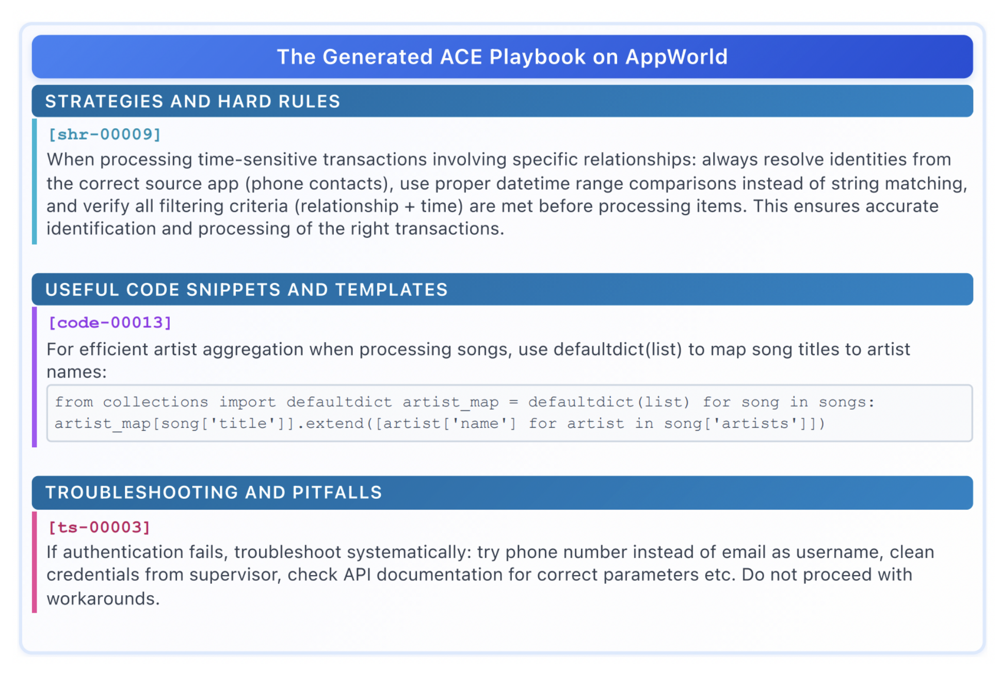

将上下文视为演化的"战术手册"而非简单压缩
解决简洁性偏差与上下文坍缩两大痛点
在不修改模型权重的情况下，通过优化输入来提升性能
三大组成部分：
三大优势：
许多提示词优化器追求简洁、通用的指令
关键洞察：LLM 不像人类需要简洁总结，它们更擅长从详细的长上下文中自主提取相关性
依赖 LLM 整体重写上下文的方法会逐渐退化
负责生成候选经验
for task in task_pool:
trajectory = execute_task(task, current_context)
raw_experiences.append(trajectory)
生成原始轨迹、工具调用、推理过程
从经验中提取结构化见解
管理和组织策略库
def curate(current_context, new_insights):
# Step 1: Identify new content
novel_items = deduplicate(
new_insights,
current_context
)
# Step 2: Structured merge
updated_context = merge_with_structure(
current_context,
novel_items,
preserve_details=True # Key: Preserve details
)
# Step 3: Reorganize
return reorganize_by_category(updated_context)
关键：保留细节（preserve_details=True）
成长与精炼，而非压缩与删除
ACE 生成的上下文采用层次化结构
## Category: Tool Usage ### API Calling - Specific: For `search_user` API, always include `exact_match=True` for email queries - General: Validate all API parameters before submission ## Category: Error Handling ### Parsing Errors - When date parsing fails, try formats: ISO 8601 → US format → EU format - Log original error message for debugging
Reflector 生成三个层次的策略
Curator 使用语义相似度识别重复
| 方法 | Normal-Test | Challenge-Test | Average |
|---|---|---|---|
| Base LLM | 21.0% | 8.0% | 14.5% |
| ICL | 23.5% | 9.5% | 16.5% |
| MIPROv2 | 25.8% | 11.2% | 18.5% |
| GEPA | 26.5% | 10.8% | 18.7% |
| Dynamic Cheatsheet | 28.2% | 12.5% | 20.4% |
| ACE (离线) | 31.8% | 14.2% | 23.0% |
| ACE (在线) | 33.5% | 15.8% | 24.7% |
相比基线提升 8.6%
2025年9月官方排行榜
好的上下文设计可以弥补模型能力差距
| 指标 | Dynamic Cheatsheet | ACE | 提升 |
|---|---|---|---|
| 适应延迟 | 12.3 秒/迭代 | 8.1 秒 | 34% ↓ |
| 推出成本 | $2.45 | $1.67 | 32% ↓ |
| 上下文长度 | 1,200 tokens | 2,800 tokens | 133% ↑ |
关键洞察：
[任务执行]
↓
[LLM一次性重写]
↓
[压缩上下文]
↓
信息丢失 + 简洁性偏差
[任务执行]
↓
[Reflector提取见解]
↓
[Curator增量合并]
↓
详细战术手册 + 防止坍缩
设计哲学：上下文应该是知识库，而非摘要